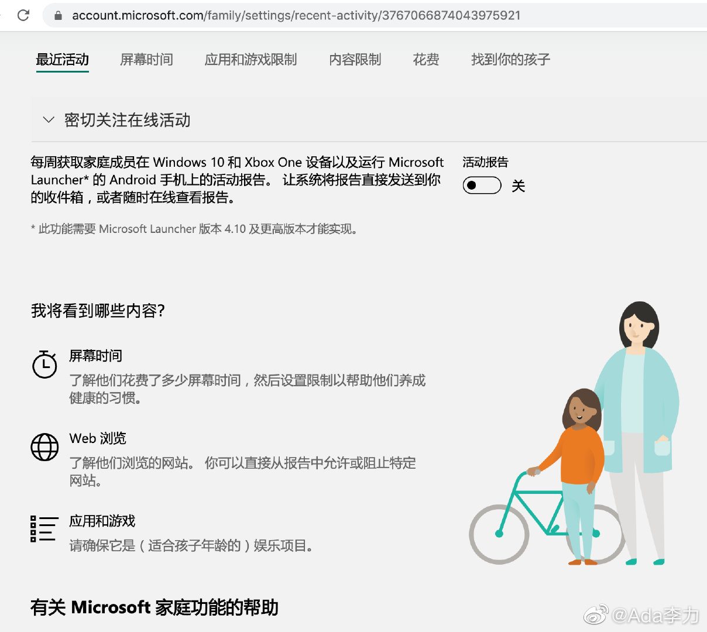
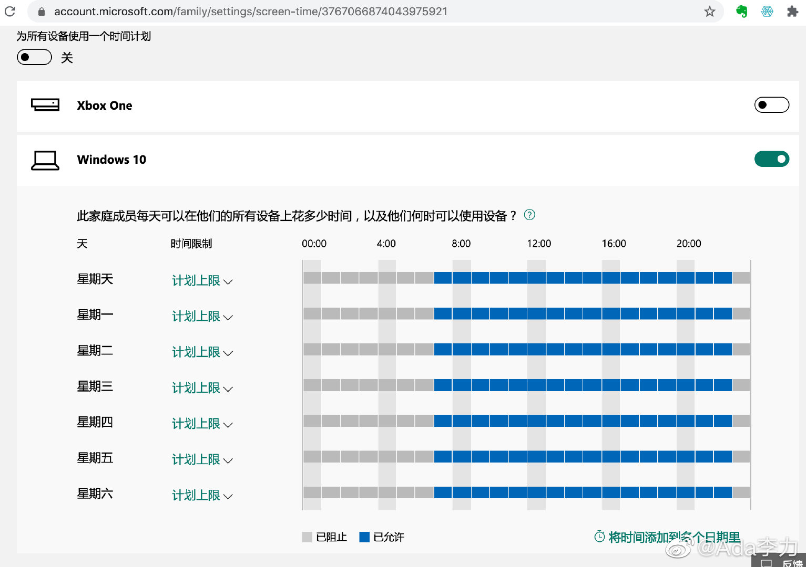

回复@可爱小象妈:电脑系统设置-账号-家庭选项，需要有电脑管理员权限。设置时要给家长和孩子，分别建立Microsoft账号，并且孩子用这个账号登录电脑。家长之后可以通过浏览器远程查看和修改。//@可爱小象妈:请问这个功能在哪里，最近一直在找这样的监测软件@Ada李力:给#姣姣#使用的电脑上设置了Windows 10 自带的家庭功能，可以对孩子的电脑使用时间，应用和浏览网页做一些限制。国内外的软件设计差异确实大。微软这个功能，让国人不习惯的是：1， 每周才能看到一次报告，不是每时每刻；2，报告要打开邮箱看，而不是在线看。我自从离开外企工作环境后，极少再有使用邮箱的机会。